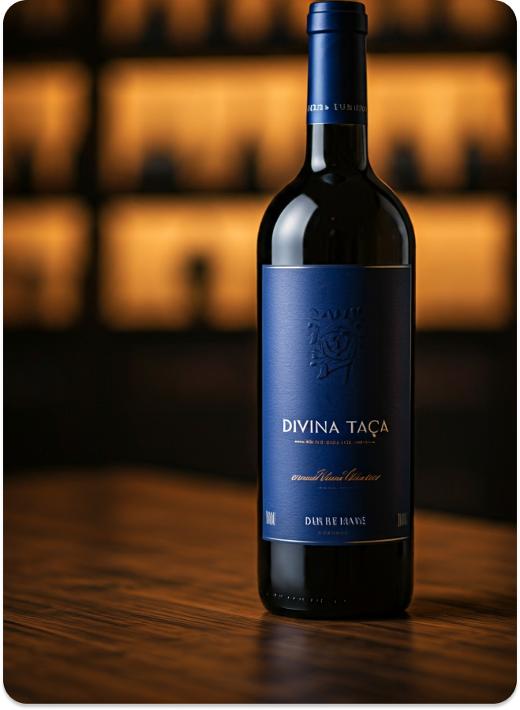
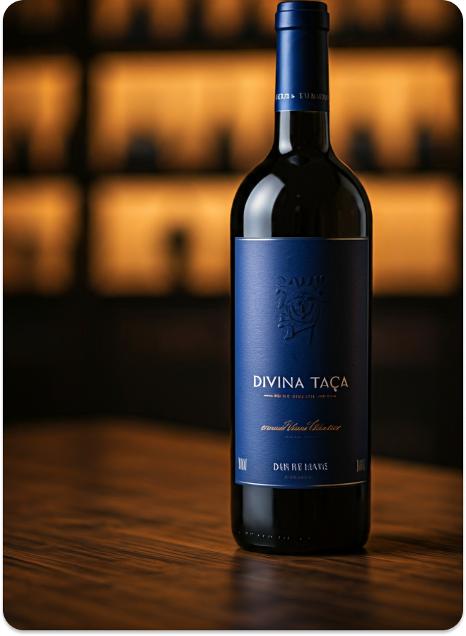

O Vinho no Brasil: Produção e Qualidade em Ascensão
O Vinho no Brasil: Produção e Qualidade em Ascensão:
Embora o Brasil não seja um dos primeiros países que vêm à mente quando se pensa em vinhos, a produção brasileira tem se destacado nas últimas décadas, especialmente nas regiões do Vale dos Vinhedos (RS), Serra Gaúcha e São Joaquim (SC). A vinicultura no Brasil tem experimentado um grande crescimento, com vinícolas produzindo vinhos de qualidade mundial, como o espumante brasileiro, que tem conquistado prêmios em competições internacionais. As variedades de uvas adaptadas ao clima local, como a Merlot e a Tannat, têm mostrado grande potencial, e a indústria do vinho brasileiro continua a se expandir e a ganhar reconhecimento internacional.
A Harmonização de Vinhos:
Uma das grandes paixões dos enófilos (amantes do vinho) é a harmonização entre vinhos e alimentos. Embora cada vinho tenha suas características próprias, alguns princípios gerais podem ser seguidos para combinar vinho e comida. Os vinhos tintos encorpados, como o Cabernet Sauvignon, geralmente harmonizam bem com carnes vermelhas, como um bom filé mignon ou um cordeiro assado. Já os vinhos brancos mais leves, como o Sauvignon Blanc, são perfeitos para pratos à base de peixes, frutos do mar ou saladas frescas. Para sobremesas, um vinho do Porto ou um vinho de sobremesa, como um Sauternes, pode ser uma escolha maravilhosa.